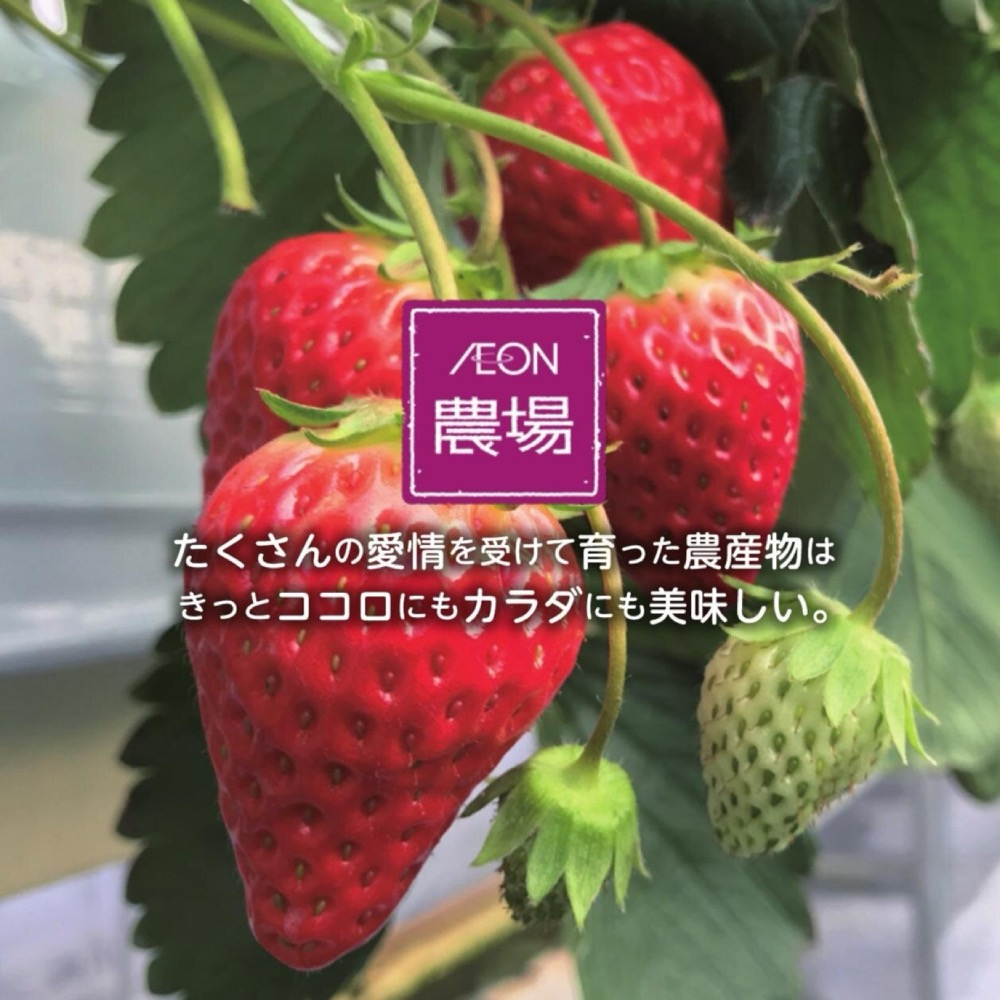
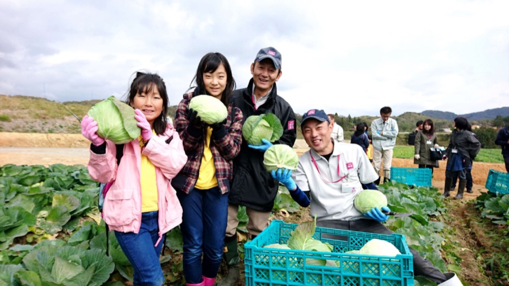
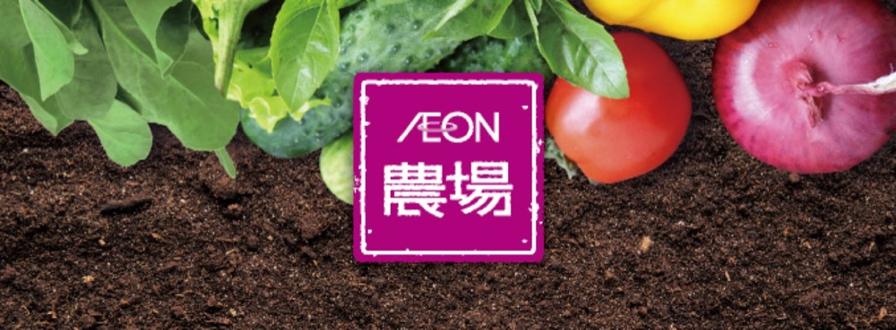
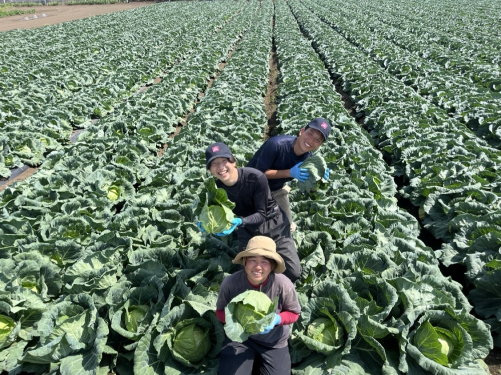

サプライチェーン一貫型農業ビジネスの「AEON農場」ブランド
福永 庸明
イオンアグリ創造株式会社 代表取締役社長
1995年4月、ウエルマート㈱（現マックスバリュ西日本㈱）入社。2006年4月、マックスバリュ西日本㈱ 農産商品部長就任。2009年7月、イオンアグリ創造㈱生産本部長兼管理本部長就任。2012年4月、イオンアグリ創造㈱代表取締役社長（現任）。
企業サイトを見るTRACK 01
サプライチェーン一貫型農業ビジネスの「AEON農場」ブランド

イオンアグリ創造株式会社は千葉市に本社機能を持つイオンのグループ会社で、「農業の発展とお客さまの価値を創造する」を理念にかかげ、イオン直営農場の運営および農産物の生産委託に取り組んでいる。直営事業、オーガニック事業、パートナー事業の3つの事業を柱に、若い力による未来の農業の創造に向け様々なことにチャレンジしている企業だ。
イオンは、小売業を起点に消費者のくらしの変化を先取りしながら多様な事業を成長させてきた。店舗に寄せられる「お客さまの声」を経営に反映し、サプライチェーン発想での価値創造を大切にしている。農作物の調達においても、高齢化や後継者不足による農業人口の減少など、日本全体が抱える課題の解決に向けて積極的に取り組むべく農業法人を立ちあげた。持続可能な農業の実現、地域農業を支える次世代農業者の育成、農業の脱炭素化・DX化、プロダクションロス削減など、その挑戦は多岐にわたる。
TRACK 02
“受け皿”が求められていた…農業を志望する学生の存在
2009年、イオンは「イオンアグリ創造」を設立し、農業分野に参入した。日本の農業は生産者の高齢化や担い手の不足、耕作放棄地の拡大など、長年にわたり多くの課題を抱えていた。イオンは、農地法が改正された2009年にイオンアグリ創造を設立し、同年7月に茨城県牛久市との間で、農業参入に関する協定と土地の賃貸借に関する契約を締結、2.6ヘクタールの耕作放棄地解消プログラムを活用して農業に参画。第1号農場となる「茨城牛久農場」を開場することとなる。以来、新しい農業経営モデルの確立に向けて挑戦を続けている。
イオンアグリ創造は、店舗から届くお客さまの声を生産に反映するだけでなく、生産現場の課題を企業経営視点で捉え、小売業が持つインフラや知見を新たな農業経営に取り入れ、順調に規模を拡大していく。設立から6年目の2015年度には「どれぐらいの応募があるだろうか」と不安な気持ちを抱えつつも初の新卒採用を行った。当時、社内の誰もが「農業は若年層から敬遠される職業なのだろう」と思っていた。ところが、最終的にはエントリー数が3,000人以上、なんと倍率は100倍超を記録。志望してくる学生は農学部出身者だけではなく､経済学部や商学部など様々だった。
農作物の生産や流通に携わる職は、専門性も高くそもそもの採用人数が少ない。メーカーや小売店に就職して、すぐに希望する職に就けるかどうかもわからない。かといって、学校を卒業してすぐに独立就農するのもハードルが高い。そういった若い世代がイオンアグリ創造への入社を希望してくれたのだろう。未来の農業を担う若い世代が、安心してイキイキと働ける、持続可能な農業に携われる、そういった環境を整えることがイオンアグリ創造の使命のひとつなのだということを初めて明確に認識した出来事だったという。



TRACK 03
平均年齢36歳。若さで農業を改革せよ
創業から15年経ったイオンアグリ創造。社員の平均年齢は36.2歳と、日本の農業従事者の平均年齢68.4歳と比べて、圧倒的に若い。先人の熟練された技術が彼らに継承され、同時に先端技術を活用することで栽培技術と経営力が底上げされる。加えて、各農場間で農場運営に関わるさまざまな情報を日々共有することで、かつてない安定した農業生産活動が実現できているのだ。
お客さまの意見を直接農場に反映できる強みを持つイオンアグリ創造は、お客さまと直接対話するべく、さまざまな販売方法や情報発信にも取り組んでいる。自社で運用している Instagram ではフォロワー100万人を目標に、日々の農場の様子や栽培のこだわり、おススメの料理方法を紹介し、ワクワクする農場発信に努めている。
店頭での立売販売については、お客さまが「なぜその商品を購入したのか」を直接聞き、データ上からは読み取ることができない購買理由を見つけることを心がけている。そして3年目を迎える 自社ECサイト ではヴィーガン認証商品セットや、農場から直接お届けする季節限定の特大トマトといった、まさに「ここでしか買えない商品」を販売するべく取り組んでいるという。
TRACK 04
イオンアグリだからできる「持続可能な農業」の実現
イオンアグリ創造は持続可能な農業を実現するために、オーガニック栽培に注力し、オーガニック生産者との連携の輪を広げている。原則有機JAS認証が認められていない養液栽培のみを行っているイオン埼玉久喜農場を除く全国20農場で段階的にオーガニックに転換するよう取り組んでおり、すでに直営の5農場で有機JAS認証を取得している。また「イオンオーガニックアライアンス」を設立し、全国の生産者同士がつながる場を提供している。
また世界共通の課題である「脱炭素」にも注力している。埼玉久喜農場ではJクレジット（日本版カーボンクレジット）にいち早く取り組んでおり、年間で約120トンのCO2の削減に取り組んでいることを認定された。また島根安来農場のいちご栽培においては「温室効果ガス（GHG）排出ネットゼロ」プロジェクトが始動しており、パートナー企業である株式会社タクマと協業して、町田市のごみ処理施設から排出されるCO2を農業ハウスで利用する実証実験に取り組んでいる。
そしてプロダクションロス削減の取り組みにも注力している。生産段階で生じる「食べられるけれど廃棄せざるを得ない」規格外農産物を活かす取り組みとして、オフィスビルで販売会を開催したり、ジュースなどの加工食品にして販売したり、地域の子ども食堂に寄贈したり、町の動物園に寄贈したりしているという。またハナマルキ株式会社と協業して、これまで食べられないものとして廃棄されていた未成熟な青いトマトをはじめ規格外の野菜を、調味料「液体塩こうじ」でおいしく食べるという企画を立ち上げて、レシピ提供とともに販売を開始している。